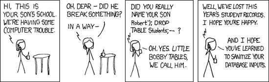

內容目录上一个主题< 使用 Session 存储数据（Storing data in Session） 下一个主题本页 |
过滤与清理（Filtering and Sanitizing）¶Sanitizing user input is a critical part of software development. Trusting or neglecting to sanitize user input could lead to unauthorized access to the content of your application, mainly user data, or even the server your application is hosted on.

The Phalcon\Filter component provides a set of commonly used filters and data sanitizing helpers. It provides object-oriented wrappers around the PHP filter extension. 清理数据（Sanitizing data）¶Sanitizing is the process which removes specific characters from a value, that are not required or desired by the user or application. By sanitizing input we ensure that application integrity will be intact. <?php
$filter = new \Phalcon\Filter();
// returns "someone@example.com"
$filter->sanitize("some(one)@exa\mple.com", "email");
// returns "hello"
$filter->sanitize("hello<<", "string");
// returns "100019"
$filter->sanitize("!100a019", "int");
// returns "100019.01"
$filter->sanitize("!100a019.01a", "float");
在控制器中使用清理（Sanitizing from Controllers）¶You can access a Phalcon\Filter object from your controllers when accessing GET or POST input data (through the request object). The first parameter is the name of the variable to be obtained; the second is the filter to be applied on it. <?php
class ProductsController extends \Phalcon\Mvc\Controller
{
public function indexAction()
{
}
public function saveAction()
{
// Sanitizing price from input
$price = $this->request->getPost("price", "double");
// Sanitizing email from input
$email = $this->request->getPost("customerEmail", "email");
}
}
过滤动作参数（Filtering Action Parameters）¶The next example shows you how to sanitize the action parameters within a controller action: <?php
class ProductsController extends \Phalcon\Mvc\Controller
{
public function indexAction()
{
}
public function showAction($productId)
{
$productId = $this->filter->sanitize($productId, "int");
}
}
过滤数据（Filtering data）¶In addition to sanitizing, Phalcon\Filter also provides filtering by removing or modifying input data to the format we expect. <?php
$filter = new \Phalcon\Filter();
// returns "Hello"
$filter->sanitize("<h1>Hello</h1>", "striptags");
// returns "Hello"
$filter->sanitize(" Hello ", "trim");
内置过滤器类型（Types of Built-in Filters）¶The following are the built-in filters provided by this component:
创建过滤器（Creating your own Filters）¶You can add your own filters to Phalcon\Filter. The filter function could be an anonymous function: <?php
$filter = new \Phalcon\Filter();
//Using an anonymous function
$filter->add('md5', function($value) {
return preg_replace('/[^0-9a-f]/', '', $value);
});
//Sanitize with the "md5" filter
$filtered = $filter->sanitize($possibleMd5, "md5");
Or, if you prefer, you can implement the filter in a class: <?php
class IPv4Filter
{
public function filter($value)
{
return filter_var($value, FILTER_VALIDATE_IP, FILTER_FLAG_IPV4);
}
}
$filter = new \Phalcon\Filter();
//Using an object
$filter->add('ipv4', new IPv4Filter());
//Sanitize with the "ipv4" filter
$filteredIp = $filter->sanitize("127.0.0.1", "ipv4");
复杂的过滤与清理（Complex Sanitizing and Filtering）¶PHP itself provides an excellent filter extension you can use. Check out its documentation: Data Filtering at PHP Documentation 自定义过滤器（Implementing your own Filter）¶The Phalcon\FilterInterface interface must be implemented to create your own filtering service replacing the one provided by Phalcon. |